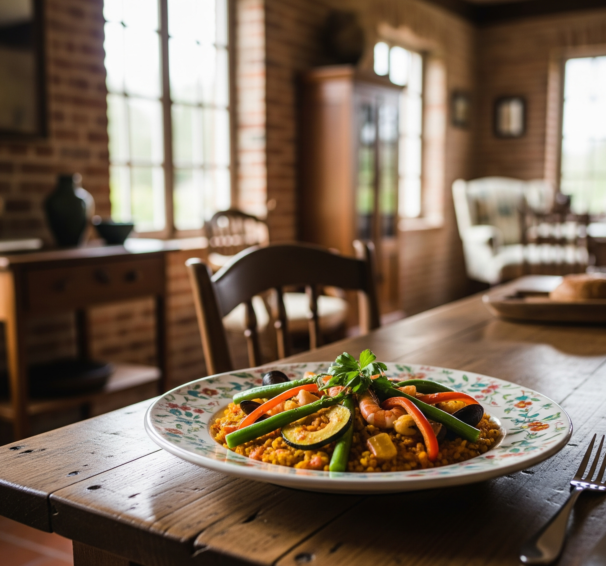

Exercício: Mexa-se Aqui em Schroeder!

Cuidar do corpo com atividades é essencial para a saúde do corpo e da mente. Independente do seu preparo físico, temos opções aqui em Schroeder.
- Caminhadas e Corridas ao Ar Livre: Curta as belas paisagens que nossa cidade oferece. Uma sugestão é a trilha do Morro Pelado ou Morro do Schroeder (com atenção!). O Parque da Inovação é ótimo para caminhadas leves, corridas e um piquenique saudável. Inicie com 30 minutos, três vezes por semana, e aumente aos poucos.
- Exercícios em Casa: Não consegue ir para a academia? Não tem problema! Flexões (na parede também), agachamentos, pranchas e alongamentos podem ser feitos em casa. Existem vários vídeos e aplicativos que ajudam você!
- Grupos da Região: Fique de olho nos grupos de corrida, pedalada ou caminhada. Eles costumam se encontrar na Praça Municipal. É uma ótima forma de se animar e conhecer pessoas!
- Esportes em Equipe: Se você gosta de esportes com bola, Schroeder tem quadras e campos. Participe de jogos de futebol, vôlei ou basquete para se exercitar e se divertir.
- Importante: Consulte um médico antes de começar uma rotina de exercícios, principalmente se tiver alguma condição de saúde.
Qualidade de Vida: Cuide do Seu Corpo e Mente

A qualidade de vida vai além do físico; é o equilíbrio entre corpo, mente e alma.
- Ritmo do Sono: Procure dormir e despertar sempre nos mesmos horários, até mesmo quando o fim de semana chegar. Transforme o seu quarto em um refúgio de tranquilidade, com pouca luz e sem barulho, e deixe de lado as telas (celular, tablet, televisão) pelo menos uma hora antes de se deitar.
- Controle do Stress: Mesmo com a calmaria de Schroeder, o estresse pode aparecer. Técnicas como meditação, respiração profunda ou um passatempo relaxante podem ser ótimas opções. Já pensou em caminhar à beira do Rio Itapocu para relaxar?
- Laços Sociais: Não perca o contato com seus amigos e familiares. Participar de eventos da cidade ou atividades em Schroeder, como festas típicas ou feiras, também ajuda a criar laços e promove alegria.
- Seu Momento: Separe um tempo para fazer o que te dá prazer, seja ler um livro na Biblioteca Pública Municipal, escutar suas músicas favoritas ou simplesmente descansar em um lugar sossegado.
- Beba Água: Mantenha-se hidratado bebendo água durante todo o dia. A água é vital para o bom funcionamento do corpo e para manter sua energia em alta.
Receitas Nutritivas: Saboreie a Saúde em Cada Prato

Alimentar-se bem não precisa ser monótono! Descubra receitas saudáveis e saborosas, aproveitando os ingredientes frescos dos mercados e feiras de Schroeder.
Opções Leves e Práticas
Salada Colorida com Frango e Palmito:
- Ingredientes: Frango desfiado, mix de folhas (alface, rúcula), tomates cereja, pepino, cenoura ralada, milho e, se achar, palmito pupunha fresco da região. Regue com azeite, limão e use os temperos de sua preferência.
- Preparo: Misture tudo de forma simples! Tempere com azeite, limão, sal e pimenta do reino moída na hora. Uma refeição leve, completa e incrivelmente refrescante.
Omelete Recheado com Verduras:
- Ingredientes: Use 2 ovos, espinafre ou couve picada, tomate picado, queijo cottage ou um pouco de queijo colonial ralado, sal e pimenta a gosto.
- Preparo: Bata os ovos com sal e pimenta. Numa frigideira, refogue os vegetais e adicione os ovos batidos. Espalhe o queijo por cima. Cozinhe até ficar firme.
Wrap Integral de Atum com Legumes:
- Ingredientes: 1 tortilha integral grande, 1 lata de atum em água (sem a água), 1/4 de xícara de cenoura ralada, 1/4 de xícara de pepino picado, 2 folhas de alface, 1 colher de sopa de iogurte natural desnatado (ou maionese light), sal e pimenta a gosto.
- Como Fazer: Numa vasilha, combine o atum, a cenoura, o pepino e o iogurte. Ajuste o sal e a pimenta. Distribua essa mistura sobre a tortilha, coloque as folhas de alface e enrole com cuidado.
Ideias Deliciosas para Café da Manhã/Lanches
Vitamina Matinal Revigorante:
- Do Que Precisa: 1 banana congelada, 1 xícara de espinafre, 1/2 xícara de frutas vermelhas (como morangos e mirtilos), 1/2 xícara de água ou leite vegetal, 1 colher de sopa de aveia.
- Como Fazer: No liquidificador, misture tudo até ficar homogêneo. Ideal para um café da manhã rápido e cheio de nutrientes!
Aveia Cremosa com Frutas Frescas:
- Do Que Precisa: 1/2 xícara de aveia em flocos, 1 xícara de leite (pode ser vegetal ou desnatado), 1/2 maçã em pedaços, 1 colher de chá de canela em pó, mel ou adoçante natural a seu gosto.
- Como Fazer: Numa panela, junte a aveia e o leite. Cozinhe em fogo médio, mexendo sempre, até ganhar consistência. Acrescente a maçã e a canela. Deixe cozinhar por mais alguns instantes. Adoce como preferir.
Torrada Gostosa com Abacate e Ovo:
- Do Que Precisa: 1 fatia de pão integral torrado, 1/4 de abacate amassado, 1 ovo cozido ou pochê, um pouco de sal, pimenta do reino e pimenta calabresa (se desejar).
- Como Fazer: Espalhe o abacate amassado sobre a torrada. Ponha o ovo por cima. Tempere com sal, pimenta e um pouco de pimenta calabresa se quiser um toque mais picante.
Jantares Leves e Reconfortantes
Frango Assado Acompanhado de Batata Doce e Brócolis:
- Do Que Precisa: 1 filé de peito de frango, 1 batata doce média (em cubos), 1 xícara de brócolis (separado em buquês), azeite de oliva, alecrim, sal e pimenta do reino.
- Como Fazer: Numa forma, misture o frango, a batata doce e o brócolis com um pouco de azeite, alecrim, sal e pimenta. Leve ao forno pré-aquecido a 200°C por cerca de 25-30 minutos, ou até que o frango esteja bem cozido e os vegetais macios.
Sopa Cremosa de Legumes (sem usar creme de leite):
- Do Que Precisa: 1 cenoura, 1 batata, 1 abobrinha, 1 chuchu (todos picados), 1/2 cebola picada, 2 dentes de alho picados, 1 litro de caldo de legumes feito em casa (ou água), sal e temperos a gosto (salsinha, cebolinha).
- Como Fazer: Refogue a cebola e o alho em um pouco de azeite. Junte os legumes e o caldo. Cozinhe até que os legumes estejam bem macios. Retire uma parte dos legumes e bata no liquidificador com um pouco do caldo até obter um creme. Devolva à panela, misture com o restante dos legumes e sirva com salsinha picada por cima.
Dica Importante: Não deixe de visitar as feiras de produtores rurais aqui em Schroeder! É o lugar perfeito para encontrar ingredientes fresquinhos, da estação e da melhor qualidade para as suas receitas.
Descubra Seu Peso Ideal com a Calculadora de IMC
O Índice de Massa Corporal (IMC) é um jeito fácil de saber se o seu peso está bom para sua altura. Atenção: Use o IMC como ponto de partida, ele não substitui a avaliação de um médico, combinado?
Calculadora de IMC:
Entenda o Que Significa Seu IMC:
- Abaixo de 18,5: Está abaixo do peso.
- Entre 18,5 e 24,9: Peso dentro da normalidade.
- Entre 25 e 29,9: Está com sobrepeso.
- Entre 30 e 34,9: Obesidade no Grau I.
- Entre 35 e 39,9: Obesidade Grau II (considerada severa).
- Igual ou acima de 40: Obesidade no Grau III (mórbida).
Ache Profissionais de Saúde Aqui em Schroeder
Ter o apoio de profissionais é essencial para um cuidado seguro e sob medida. Em Schroeder, encontre:
- Nutricionistas: Criam dietas personalizadas e dão dicas para uma alimentação melhor.
- Educadores Físicos/Personal Trainers: Elaboram treinos eficazes e seguros, focados em seus objetivos.
- Médicos (Clínicos Gerais ou Especialistas): Fazem check-ups, diagnosticam e tratam problemas de saúde.
- Psicólogos: Ajudam a lidar com estresse, ansiedade e cuidar da saúde mental.
Para achar esses profissionais, procure em listas locais, peça indicações em clínicas de Schroeder ou busque a UBS perto de você.
Não Perca os Eventos de Saúde da Sua Cidade!
Schroeder sempre tem eventos e ações sobre saúde e bem-estar. Olhe os avisos da Prefeitura e redes sociais para participar de campanhas de vacinação, palestras, caminhadas e muito mais. É um jeito ótimo de cuidar de você e da cidade!
Fale Conosco
Estamos aqui para te ajudar! Mande um email se tiver alguma pergunta ou sugestão.